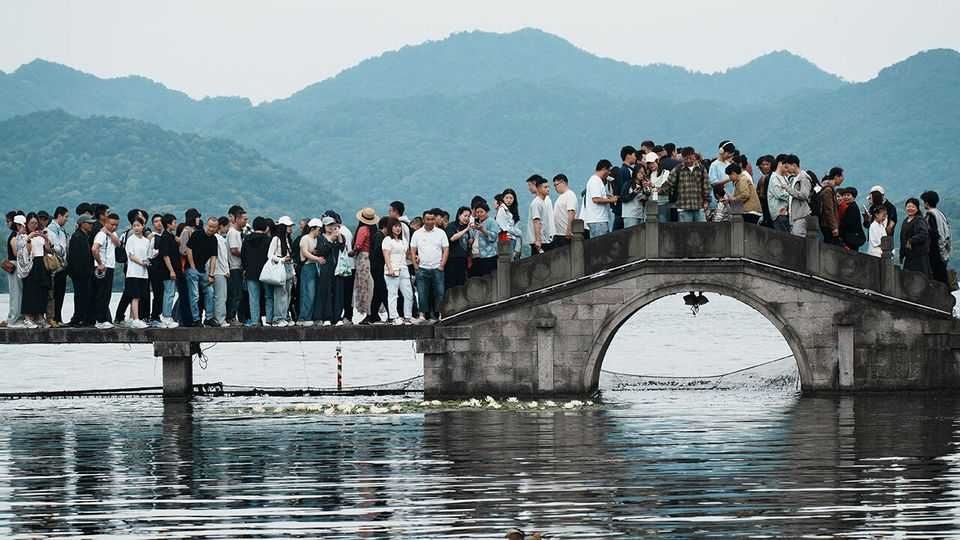

In China, people get unusually long public holidays
So why do they complain about them so much?

Oct 8th 2026
The past few days have been gruelling for many people in China. The weeklong National Day holiday, which ended on October 7th, was a struggle for tickets and space at packed destinations with rip-off prices. Instead of hailing the country’s system of arranging long breaks, many moan about the way they encourage vast numbers of people to travel around China at the same time. China’s social media have been abrim with complaints about the way the government makes people work on surrounding weekends in order to carve out these extended holidays. “I’d rather have a three-day National Day holiday, if my paid leave and two-day weekends were guaranteed,” wrote a typical grumbler.
The government introduced “golden-week” holidays in 1999 to boost consumption in the wake of the Asian financial crisis. They have been a fillip to the tourism industry, but are a dampener to public morale. The middle class has grown rapidly since the launch of golden weeks. It has little freedom to air political grievances, but the Communist Party does give it leeway to fume about holidays. Online, it seizes the opportunity. On Weibo, a miniblog site, a hashtag relating to the holiday system has racked up more than 4bn views and 1.5m comments, many critical.
Even members of the rubber-stamp parliament have called for an end to the weekend-shuffling system. One is Tian Xuan of Peking University, who told local media in March that “compared with some more mature international vacation systems”, China’s needed improvement. Online surveys conducted by Chinese media suggest that most people agree.
Employers are often blamed, too, for not allowing workers to take long vacations at times of their own choosing, and denying them all of the leave they are due (usually five to ten days on top of public holidays). One company in Anhui province recently made the news for giving employees three days off between this year’s mid-autumn festival and National Day, creating a 13-day-long holiday. The purpose, said the firm, was to let workers “have fun and come back energised”.
Many Chinese would resent any change to the golden week surrounding the lunar new year: that is one long holiday which, most agree, has to be shared with the rest of the country, albeit through gritted teeth. But the other two long official breaks—the May Day holiday and National Day—are far less sacrosanct.
Plenty of workers would prefer a long holiday at the height of summer, when many cities become unbearably hot. In the Mao era, model workers could enjoy summer breaks in the seaside resort of Beidaihe, east of Beijing. But unlike in Europe, long holidays during the hottest months have not become a tradition. Chinese leaders still gather at Beidaihe for a few days in the summer, but probably more for politicking than frolicking.
Demand for summer downtime is evident. This year destinations enjoying the fastest growth on Qunar, a Chinese travel-booking site, were “summer retreats”. One of them is Anshun in Guizhou, a poor province in the south-west, which lures visitors by calling itself the “21°C city”. Wang Xue, a copywriter from the central city of Wuhan (a furnace in summer), boarded one recent flight to Guizhou. She says that last year she and her mother had made the mistake of holidaying in another sweltering city, Chengdu. But when your correspondent visited mountainous Anshun at the tail end of summer, tourists remarked that the place was not as cool as they had been led to believe. That day it was a 29°C city.
The government has budged a little. In 2008 it cut golden weeks from three to two by shortening May Day and creating new one-day holidays. But it has since beefed up May Day using borrowed weekends. In the past few years, as economic growth has faltered, officials have become more focused again on the potential consumption-boosting power of time off. Allowing people to complain online, officials may reckon, enables people to let off steam while not putting too much pressure on the party’s holiday planners. ■
Subscribers can sign up to Drum Tower, our new weekly newsletter, to understand what the world makes of China—and what China makes of the world.